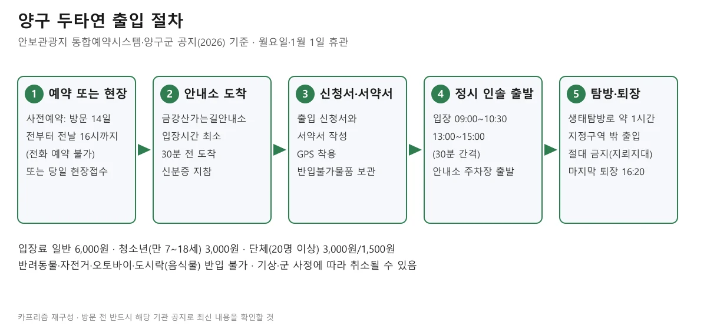
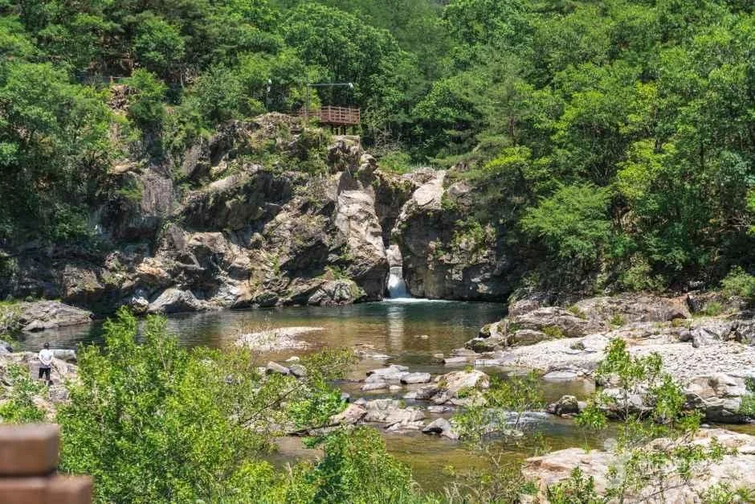
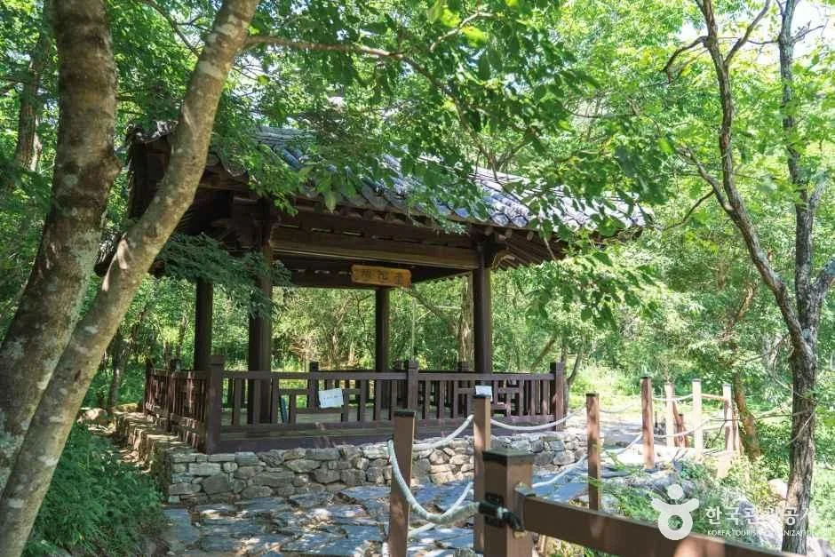
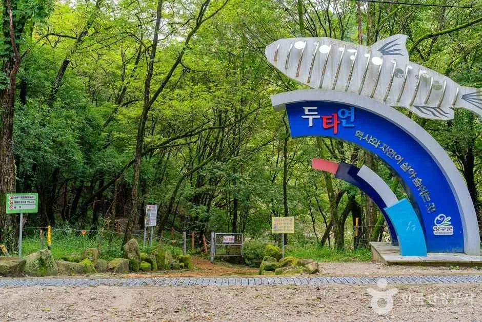
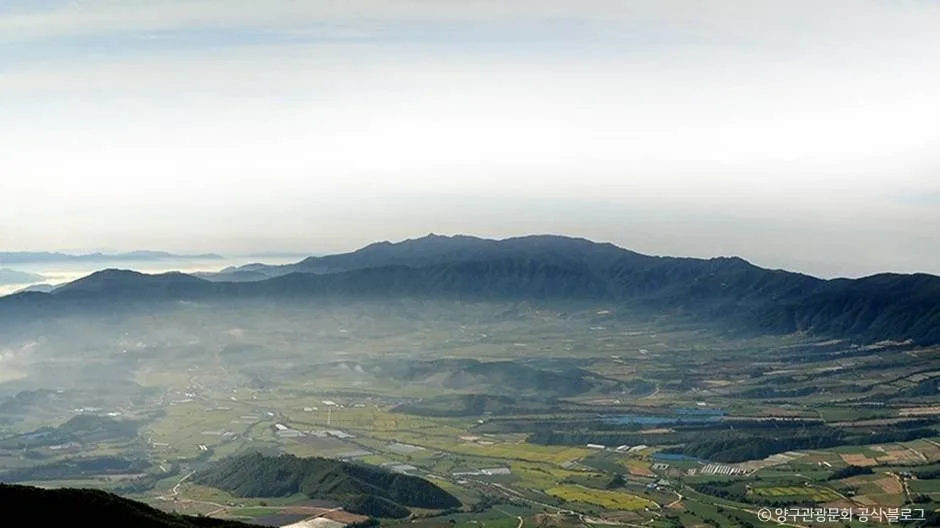
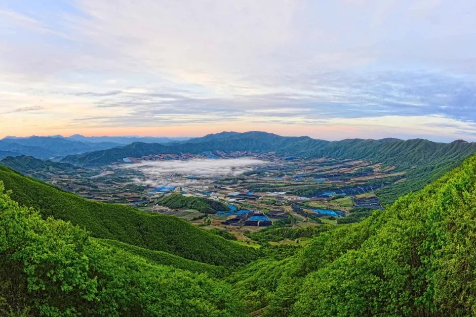
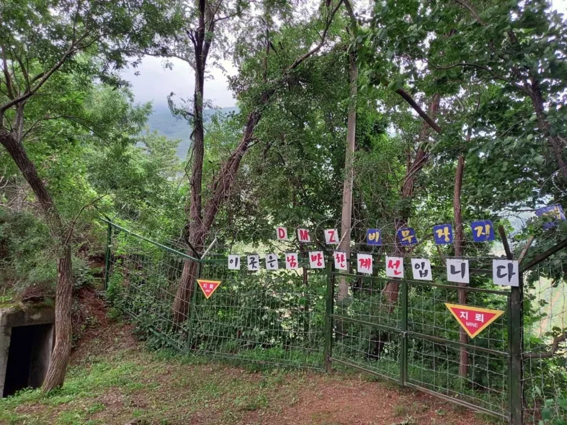
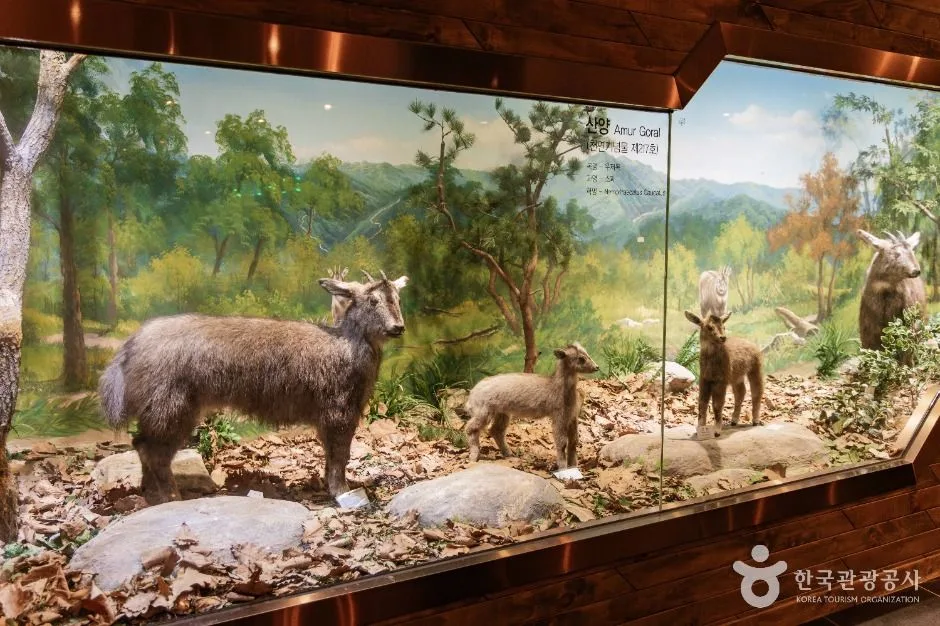
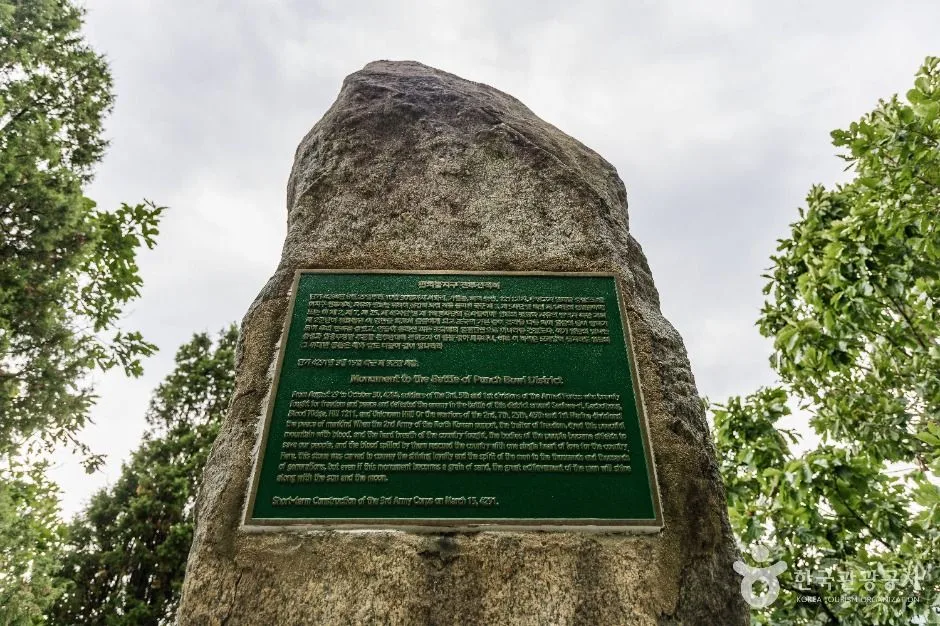

▲ 숲 사이로 놓인 출렁다리. 두타연 탐방로의 다리로 소개된 시설이지만 촬영 시기는 확인하지 못했다. 사진=한국관광공사
"을지전망대 관람이 2026년 9월 1일부터 10월 30일까지 군부대 계획에 따라 한시적으로 중단됩니다." 양구 안보관광지 통합예약시스템에 2026년 8월 20일자로 올라온 공지다. 가을 단풍철에 펀치볼 일대를 찾는 사람이 가장 먼저 떠올리는 곳이 막혀 있다는 뜻이다. 그렇다고 양구가 닫힌 것은 아니다. 민통선 안 두타연은 신분증과 서약서를 거쳐 입장할 수 있고, DMZ펀치볼둘레길은 숲나들e에서 예약하면 가이드와 함께 걷는다. 이 글은 안보관광지 통합예약시스템(stour.ticketplay.zone)의 요금·시간·공지, DMZ펀치볼둘레길 공식 누리집, 한국관광공사 TourAPI를 2026년 10월 8일에 직접 열어 확인한 값만 썼다. 확인하지 못한 항목은 그대로 밝혔다.
💡 먼저 알아둘 세 가지
① 을지전망대는 10월 30일까지 통제, 제4땅굴은 잠정 휴관. 통합예약시스템의 공지와 요금 안내에 각각 적혀 있다. 10월 31일 이후 재개 여부는 공지에 나와 있지 않아 확인하지 못했다.
② 두타연은 월요일 휴관. 월요일과 1월 1일은 휴관이고 설날·추석 당일은 오전만 휴관한다. 월요일이 공휴일이면 정상 운영된다고 공식 안내에 적혀 있다.
③ 10월은 두타연 성수기. 공식 안내가 5월과 10월을 성수기로 분류해 현장접수 인원 한도가 달라진다. 현장접수가 마감될 수 있어 사전예약 여부를 먼저 보는 편이 안전하다.
1. 한눈에 보기 — 양구 명소별 개방·요금·출입 방법
| 명소 | 개방 시간·휴무 | 요금 | 출입·예약 | 확인 출처 |
|---|---|---|---|---|
| 두타연(방산면 두타연로 297) | 입장 오전 09:00·09:30·10:00·10:30, 오후 13:00~15:00(30분 간격), 마지막 퇴장 16:20. 월요일·1월 1일 휴관 | 일반 6,000원, 청소년(만 7~18세) 3,000원, 단체(20명 이상) 3,000원/1,500원 | 사전예약 또는 당일 현장접수, 신분증·서약서 필수 | 안보관광지 통합예약시스템 |
| 을지전망대(해안면 해안서화로 35) | 2026년 9월 1일~10월 30일 군사작전으로 관람 중단 | 일반 4,000원, 청소년 2,000원(재개 시 기준) | 양구통일관에서 출입 신청 | 통합예약시스템 공지(2026.8.20) |
| 제4땅굴 | 잠정 휴관 중 | 일반 4,000원, 청소년 2,000원(휴관으로 이용 불가) | 통일관 접수 | 통합예약시스템 이용 유의사항 |
| 양구통일관·전쟁기념관 | 건물 개방 시간은 공식 자료에서 확인하지 못함(을지전망대 견학 회차는 6장 표 참고, 현재 중단) | 무료 | 문의 033-480-7251 | 통합예약시스템 요금 안내 |
| DMZ펀치볼둘레길(해안면 해안서화로 23) | 예약탐방 1일 2회(09:20·13:20), 하루 100명 | 탐방 요금은 공식 누리집·TourAPI에서 확인하지 못함 | 숲나들e 예약(탐방 3일 전까지), 2인 이상, 가이드 동반 필수 | DMZ펀치볼둘레길 공식 누리집 |
| 양구 산양·사향노루센터(동면 펀치볼로 266-60) | 09:00~18:00(12:00~13:00 휴게), 매주 월요일 휴무 | 입장 요금은 확인하지 못함 | 별도 신청 절차는 공식 정보에 없음, 주차 가능 | TourAPI |
2. 두타연 — 신분증·서약서·GPS, 입장까지 걸리는 절차
한국관광공사 정보에 따르면 두타연은 민통선 지역이다. 사전 출입 신청 또는 당일 현장접수로 들어가며, 방문 당일 금강산가는길안내소에서 출입 신청서와 서약서를 쓰고 GPS를 착용한 뒤 인솔에 따라 정시에 출발한다. 두타연주차장에서 생태탐방로를 도는 구간은 약 1시간이고, 정해진 시간에 복귀해야 한다.

▲ 양구 두타연 출입 5단계 도표. 안보관광지 통합예약시스템·TourAPI 안내를 카프리즘이 재구성했다. 도표=CarPrism
✅ 두타연 출입 체크리스트(통합예약시스템 확인 항목)
· 신분증 필수. 미성년자는 가족관계증명서와 등본이 필요하다고 안내돼 있다
· 사전예약은 방문일 14일 전부터 전날 16시까지, 전화 예약은 불가. 예약 완료 문자의 모바일티켓 링크로 서약서를 제출한다
· 당일 현장접수도 가능하지만 직원 안내에 따라 출입 신청과 서약서를 작성한다
· 출입 신청서에는 출입 인원 전원의 인적사항을 적어야 하고, 관광버스는 운전자도 동승자 명단에 넣어야 한다
· 입장 시간 최소 30분 전까지 금강산가는길안내소 도착
· 입장 시간: 오전 09:00·09:30·10:00·10:30, 오후 13:00·13:30·14:00·14:30·15:00, 마지막 퇴장 16:20
· 주류·인화성물질·버너·낚싯대·낫·톱·삽 등은 소지 불가(안내소 보관), 반려동물·자전거·원동기·4륜 오토바이 출입 불가
· 쓰레기 투기·취사·음주·흡연·음식물 섭취·산나물 채취·어로·입수 금지, 도시락 반입 금지
· 두타연 전 지역이 지뢰지대라 지정구역 밖 출입은 절대 금지
| 구분 | 개인 | 단체(20명 이상) | 비고 |
|---|---|---|---|
| 현장접수 | 50명 | 없음(단체는 사전예약 필수) | 주말·공휴일·성수기(5월·10월)는 오전·오후 각 100명 |
| 사전예약 | 50명 | 100명 | 주말·공휴일·성수기는 오전·오후 각 개인 100명, 단체 200명 |
입장료 감면도 공식 안내에 있다. 미취학 아동(6세 이하)·65세 이상·장애인(보호자 포함)·기초생활수급자·국가보훈대상자(동반 1인)는 전액 감면, 군 장병·병역명문가·단체 등은 50% 감면, 호수문화권역(양구·춘천·홍천·화천·인제)과 접경지역 시군 주민은 50% 감면이다. 두타연의 다자녀 가정(19세 미만 자녀 2인 이상 동행)은 30% 감면이며 감면은 중복되지 않는다. 문의는 금강산가는길안내소 033-480-7266, 양구군청 033-480-7204다. 안보관광지 이용 유의사항 바로가기
▲ 금강산가는길안내소로 소개된 건물. 촬영 시기는 확인하지 못했다. 사진=한국관광공사
3. 두타연 생태탐방로 — 공식 추천 순서와 열목어 조형물
통합예약시스템이 소개하는 두타연 1코스(생태탐방로, 지정지역 내 자율 관광)의 추천 순서는 두 가지다. ①은 주차장 → 조각공원 → 두타정 → 두타사옛터 → 징검다리 → 출렁다리 → 두타연폭포 → 주차장, ②는 주차장 → 조각공원 → 두타사옛터 → 두타정 → 두타연폭포 → 주차장이다. 시간은 약 1시간 안에 맞춰 복귀해야 하므로 ②가 짧은 편으로 보이지만 구간별 소요 시간은 공식 자료에서 확인하지 못했다.
| 코스 | 내용 | 비고 |
|---|---|---|
| 1코스 생태탐방로 | 지정지역 내 자율 관광, 약 1시간 | 입장료 일반 6,000원 |
| 2코스 소지섭길 | 시설소개에 이름만 올라 있고 구간 설명은 확인하지 못함 | - |
| 3코스 DMZ평화의길 테마노선 | 금강산가는길안내소 → 하야교삼거리 → 금강산가는길(삼대교) → 두타연폭포·조각공원 일대 → 안내소 | 두루누비 사전예약, 참가비 10,000원, 군 부대 동행 |
| 4코스 DMZ평화의길 26코스(금강산가는옛길) | 비득안내소에서 두타연주차장까지 도보 2시간 30분 | 8일 전 예약 마감, 현장접수 불가 |

▲ 바위 사이로 물이 흘러내리는 두타연 일대 계곡. 두타연폭포인지는 확인하지 못했고 촬영 시기도 알 수 없다. 사진=한국관광공사
TourAPI(강원평화지역 국가지질공원 자료)는 두타연이 수입천의 지류인 사태천이 감입곡류하는 과정에서 물굽이가 절단되며 생긴 폭포와 폭호라고 설명한다. 두타연이라는 이름은 부근에 두타사라는 절이 있었다는 데서 왔다고 한다.

▲ 숲 아래 놓인 정자. 두타정으로 소개된 곳일 수 있으나 확인하지 못했다. 사진=한국관광공사

▲ 물고기 모양 조형물이 있는 안내 구조물. 설치 위치는 확인하지 못했다. 사진=한국관광공사
4. DMZ 평화의 길 테마노선·횡단노선 — 따로 예약하는 길
통합예약시스템 공지(2026년 9월 8일)에는 두 가지 프로그램이 정리돼 있다. 공지 기준 값은 아래와 같다.
| 구분 | 테마노선(두타연 피의 능선 코스) | 횡단노선(26코스) |
|---|---|---|
| 2026 운영기간 | 4월 18일~10월 31일(7~8월 중단) | 5월 1일~6월 30일, 9월 1일~11월 14일(7~8월 중단) |
| 운영 요일·시간 | 화·(수)·금·토·일, 10:00·14:00(주말만 오후) | 주 4회 예정(화·수·금·토, 변동 가능), 09:20 집결 |
| 규모 | 1회 최소 5명~최대 20명, 하루 40명 | 1회 최대 40명 |
| 거리·시간 | 총 16.7km, 3시간(도보 2.7km, 차량 14km) | 총 12km, 3시간 |
| 집결지 | 금강산가는길안내소 | 양구종합관광안내소 주차장(양구종합체육관) |
| 예약 | 두루누비 100% 사전예약, 전달 1일 00시 오픈~탐방 7일 전 마감, 참가비 10,000원, 만 7세 이상 내국인 | 양구안보관광홈페이지 실시간 예약, 운영일 20일 전 00시 오픈~8일 전 00시 마감 |
한국관광공사 TourAPI에는 같은 테마노선이 '매주 월요일·수요일~목요일 휴무, 4명 이상일 때만 운영'으로 나온다. 양구 공지(화·(수)·금·토·일 운영, 최소 5명)와 다르므로 이 노선은 공지의 값을 기준으로 삼고, 최종 요일·최소 인원은 예약 화면에서 확인하는 편이 맞다. 기상이나 안보 상황에 따라 투어가 갑자기 취소되거나 대체 일정으로 운영될 수 있다고 TourAPI에 표기돼 있다. 양구군은 이 노선의 초소 출입 절차로 사전예약 명단 공유, 서약서 작성, 위치수신기·형광조끼 전달, 서약서·출입자 명단 제출과 짐 검사를 공지에 적었다.
5. 펀치볼 — 분지와 DMZ펀치볼둘레길
TourAPI에 따르면 펀치볼은 양구군 해안면의 해발 400~500m 분지로, 모습이 화채그릇을 닮아 붙은 이름이다. 민간인 출입통제선 안에 있는 국내 유일의 면 단위 지역이며, 대암산 정상부의 용늪은 남한 유일의 고층습원(천연기념물 제246호)으로 소개된다. TourAPI에는 펀치볼마을이 '상시 개방'으로 적혀 있지만, 차량으로 마을에 들어가는 방법과 절차는 공식 자료에서 확인하지 못했다. 북서쪽 을지전망대는 양구통일관에서 출입 신청을 해야 한다.

▲ 산으로 둘러싸인 분지 풍경. 펀치볼로 소개된 사진이며 촬영 시기는 확인하지 못했다. 사진=한국관광공사
DMZ펀치볼둘레길은 숲길등산지도사를 동반하지 않으면 탐방이 안 된다. 민간인 출입통제 지역 안에 조성된 숲길이고 미확인 지뢰지역과 인접해 안내자의 안내를 따라야 하며, 안전 문제 동의서를 작성한다. 예약은 산림청 숲나들e에서 받고 문의는 033-481-8565다.
| 구간 | 거리·시간 | 비고 |
|---|---|---|
| 평화의길(원점회귀) | 14.0km, 약 5시간 30분 | 단축코스 벙커길 10km, 4시간. 월경금지판·대형벙커·와우산 자작나무숲 |
| 오유밭길(원점회귀) | 21.12km, 약 7시간 30분 | 단축코스 도솔숲길 8.7km 4시간, 송가봉길(13:20 출발) 4.0km 2시간 30분 |
| 만대벌판길(원점회귀) | 21.9km, 약 7시간 30분 | 단축코스 만대숲길(09:20) 편도 9.6km, 4시간 |
| 먼멧재길(원점회귀) | 16.2km, 약 6시간 | 단축코스 13km, 4시간 50분. 중간 탈출로 없음 |
✅ DMZ펀치볼둘레길 예약 체크리스트(공식 누리집)
· 인터넷 예약은 숲나들e, 탐방 3일 전까지. 단체(20인 이상)는 전화 상담 우선
· 1일 2회(09:20·13:20), 하루 100명 선착순, 2인 이상 탐방 가능
· 13:20 탐방은 오유밭길 중 송가봉길 구간만 가능(약 2시간 30분)
· 출발지 내비 주소: 강원도 양구군 해안면 해안서화로 23. 시간 엄수
· 구간별 코스는 현지 상황에 따라 단축될 수 있음(먼멧재길 제외)
· 농작물에 손대지 않기, 인화물질·음식물 반입 금지, 지정된 숲길 외 이동 금지(지뢰 위험), 안내자 지시 협조
· 숲밥(점심)은 20명 이상일 때만 가능, 1인 11,000원, 일주일 전 전화 예약
· 2026년 운영은 4월 1일 개장, 2025년 겨울에는 12월 1일~3월 31일 중단됐다. 올해 겨울 휴장 공지는 아직 확인하지 못했다

▲ 분지 쪽을 내려다본 풍경으로 소개된 사진. 촬영 위치와 시기는 확인하지 못했다. 사진=한국관광공사

▲ 숲길 옆에 세워진 지뢰 경고 표지판. 정해진 숲길 밖으로 나가면 안 되는 이유다. 사진=한국관광공사
6. 을지전망대·통일관 — 지금은 막혀 있다
통합예약시스템 공지는 을지전망대 관람이 2026년 9월 1일~10월 30일 군부대 계획에 따라 한시적으로 중단된다고 밝혔다. 문의는 양구통일관 033-480-7251이다. 요금 안내에는 제4땅굴이 '잠정 휴관 중'으로 표기돼 있다. 아래 회차표와 요금은 재개 뒤 참고용이다.
| 회차 | 접수 시작 | 접수 마감 | 주차장 출발 | 퇴장(전망대 주차장 출발) |
|---|---|---|---|---|
| 1회차 | 08:40 | 09:10 | 09:30 | 10:35 |
| 2회차 | 10:20 | 10:50 | 11:10 | 12:15 |
| 3회차 | 12:40 | 13:10 | 13:30 | 14:35 |
| 4회차 | 14:20 | 14:50 | 15:10 | 16:15 |
재개 뒤 요금은 을지전망대 일반 4,000원·청소년 2,000원, 을지전망대+제4땅굴 일반 6,000원·청소년 3,000원이고 통일관과 전쟁기념관은 무료다. 이용 유의사항은 통일관 현장접수 개인 50명, 출입 가능 인원 회차별 160명·차량 20대이며 어느 쪽이든 초과하면 조기 마감된다고 적었다. 반면 2026년 6월 23일 예약 안내 공지는 을지전망대 현장접수를 회차당 선착순 30명으로 적어 두 안내가 다르다. 재개 뒤 실제 한도는 통일관에 확인해야 한다. 접수 마감 30분 전까지 통일관에 도착해야 한다.
▲ 을지전망대·제4땅굴 매표소 간판이 보이는 건물로, 양구통일관으로 소개된 사진이다. 촬영 시기는 확인하지 못했다. 현재 을지전망대는 관람이 중단돼 있다. 사진=한국관광공사
7. 펀치볼 일대 그 밖의 볼거리 — 산양센터·전적비
양구 산양·사향노루센터는 천연기념물 제217호 산양을 보호하는 시설이다. TourAPI에 따르면 2007년 개장 당시 8마리로 시작해 현재 11두가 보호되고 있고, 2009년 국내 최초로 인공증식에 성공했다. 운영 시간은 09:00~18:00(12:00~13:00 휴게), 월요일 휴무이며 문의는 033-480-7261이다. 펀치볼지구전투전적비는 1951년 8월 29일~10월 30일 펀치볼 확보를 위한 전투에서 전사한 장병을 기리려 1958년 3월 15일 육군 제3군단이 세웠다.

▲ 산양·사향노루센터 사진으로 소개된 산양 박제 전시. 전시 위치와 촬영 시기는 확인하지 못했다. 사진=한국관광공사

▲ 펀치볼지구전투전적비. 촬영 시기는 확인하지 못했다. 사진=한국관광공사
민통선 밖 선택지로 양구 관내 유료 관광지 요금도 통합예약시스템에 올라 있다. 박수근미술관·양구수목원·국토정중앙천문대는 일반 6,000원·청소년 3,000원(단체 3,000원/1,500원), 양구선사박물관·근현대사박물관과 양구백자박물관은 3,000원이다. 개방 시간은 이번에 공식 자료에서 확인하지 못했다.
8. 하루 동선 짜기 — 공식 시간표로 계산한 한계
확인된 숫자만으로 맞춘 예시다. 두타연·둘레길 출발지 사이 이동 시간과 도로 사정은 공식 자료로 확인하지 못해 계산에 넣지 않았다.
| 선택지 | 일정 | 근거 |
|---|---|---|
| A. 두타연 중심 | 예약한 입장 시간(오전 09:00~10:30 또는 오후 13:00~15:00)에 맞춰 안내소 도착 → 약 1시간 탐방 → 16:20까지 퇴장 | 통합예약시스템 입장·퇴장 시간, TourAPI 소요 시간 |
| B. 둘레길 중심 | 09:20 출발 구간 선택(평화의길 약 5시간 30분 등) 또는 13:20 송가봉길(약 2시간 30분) | 공식 누리집 탐방예약 안내 |
| C. 같은 날 두 곳 | 오전 09:20 둘레길 단축 코스(4시간)면 끝나는 시각이 13:20 안팎이라 두타연 오후 입장과 시간이 겹칠 수 있음 | 단순 합산, 이동 시간 미확인이라 권장하지 않음 |
| 피할 날 | 월요일(두타연·산양센터 휴관·휴무) | 통합예약시스템, TourAPI |
9. 같은 접경 코스 — 이미 다룬 기사
양구에서 가까운 접경 지역 기사는 이미 발행돼 있다. 신분증이 필요한 동해안 북단은 고성 통일전망대·화진포 기사, 인제 가을 자작나무 숲은 원대리 자작나무숲 기사와 인제 가을꽃축제 기사, 철원의 한탄강 협곡과 DMZ평화관광은 철원 한탄강·접경 코스 기사에서 다뤘다. 동해안으로 이어가는 길은 7번 국도 드라이브 기사를 참고하면 된다. 화천 칠성전망대 등 화천 쪽은 이 사이트에 별도 기사가 아직 없다.
✅ 출발 전 체크리스트
· 을지전망대 10월 30일까지 통제, 제4땅굴 잠정 휴관(재개 여부는 통일관 033-480-7251)
· 두타연: 신분증 지참, 일반 6,000원, 입장 30분 전 안내소 도착, 월요일 휴관, 현장접수 한도 확인(10월은 성수기), 금강산가는길안내소 033-480-7266
· 둘레길: 숲나들e 3일 전 예약, 09:20·13:20, 하루 100명, 가이드 동반, 문의 033-481-8565
· 지정구역 밖 출입 절대 금지(지뢰지대), 도시락·음식물·반려동물 반입 불가
· 펀치볼마을 차량 진입 절차, 통일관·전쟁기념관 개방 시간, 둘레길 탐방 요금은 공식 자료로 확인하지 못함
· 확인일: 2026년 10월 8일
10. 정리
양구는 을지전망대가 2026년 9월 1일~10월 30일 군사작전으로 통제되고 제4땅굴은 잠정 휴관이지만, 두타연(일반 6,000원)과 DMZ펀치볼둘레길(1일 2회·하루 100명)은 예약·접수 절차를 거쳐 갈 수 있다. 두타연은 월요일 휴관이며 신분증과 서약서가 필수다.
10월 31일 이후 을지전망대 재개 여부, 펀치볼마을 차량 진입 절차, 통일관·전쟁기념관 개방 시간, 둘레길 탐방 요금, 올겨울 둘레길 휴장일은 공식 자료로 확인하지 못했다. 가기 전 안내소·통일관·둘레길 안내센터에 전화로 확인하자.